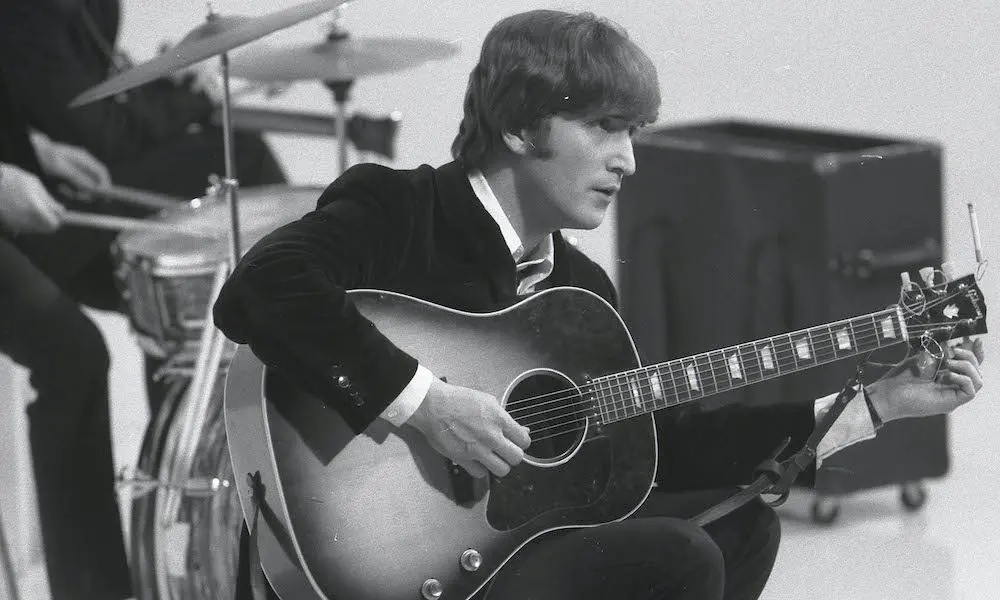
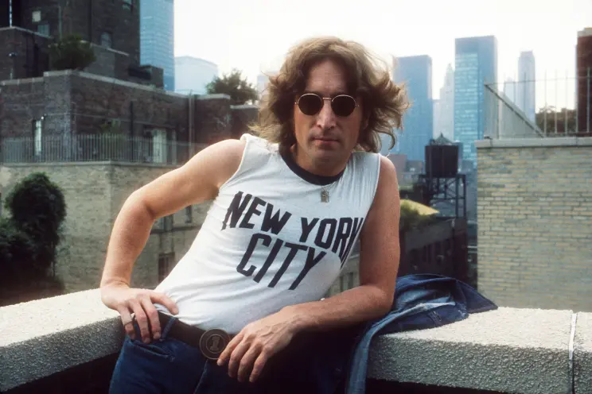

John Lennon was an English singer, songwriter, and the rhythm guitarist for the Beatles. He was born on October 9, 1940, in Liverpool, England. He had a complicated childhood, living with his Aunt Mimi for most of his formative years. One of his first instruments was the harmonica, followed by a banjo.His first band was known as the Quarrymen, which featured future Beatles' members Paul McCartney and George Harrison, who aptly thought him how to properly play the guitar. He later founded The Beatles with the two boys, and added Ringo Starr on drums. John was known for his distinctive voice and innovative songwriting. He formed a songwriting partnership with Paul McCartney, professionally known as Lennon-McCartney.
During the Beatles era, John was known for songs like "Help!, "In My Life", and "Strawberry Fields Forever". He made many major contirbutions to a majority of the band's discography.
After the Beatles disbanded in 1970, John pursued a solo career, releasing several albums and singles. His most acclaimed solo work includes single's like "Imagine" and the Christmas single "Happy Xmas (War Is Over)". He was also known for his activism and outspoken political views, particularly his opposition to the Vietnam War. He was tragically assassinated on December 8, 1980, in New York City.
